Cylinder Head Installation
Cylinder Head Installation1. Install the new coolant separator in the engine block when replacing the engine block.
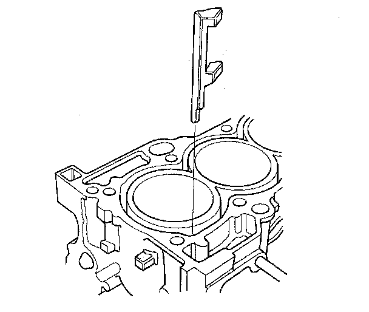
2. Clean the cylinder head and engine block surface.
3. Install the new cylinder head gasket (A) and dowel pins (B) on the engine block. Always use a new cylinder head gasket.
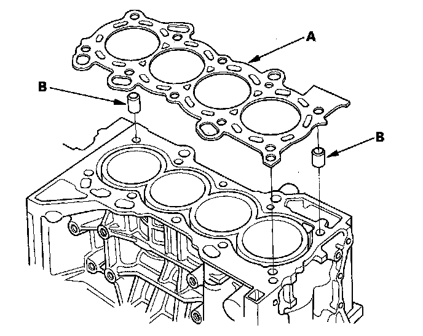
4. Set the crankshaft to top dead center (TDC). Align the TDC mark (A) on the crankshaft sprocket with the pointer (B) on the engine block.
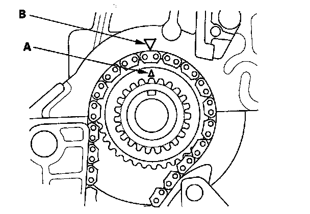
5. Install the cylinder head on the engine block.
6. Measure the diameter of each cylinder head bolt at point A and point B.
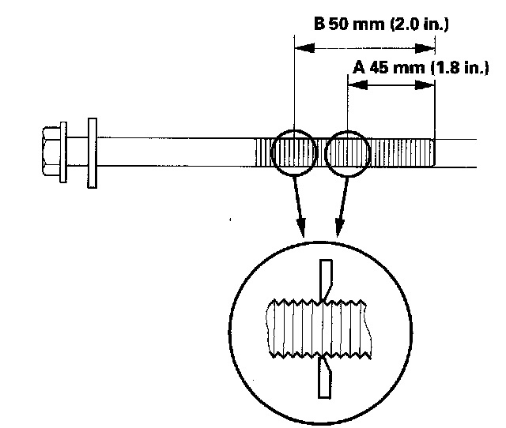
7. If either diameter is less than 10.6 mm (0.42 in.), replace the cylinder head bolt.
8. Apply engine oil to the threads and under the bolt heads of all cylinder head bolts.
9. Tighten the cylinder head bolts in sequence to 39 N-m (4.0 kgf-m, 29 lbf-ft). Use a beam-type torque wrench. When using a preset-type torque wrench, be sure to tighten slowly and do not overtighten. If a bolt makes any noise while you are torquing it, loosen the bolt and retighten it from the first step.
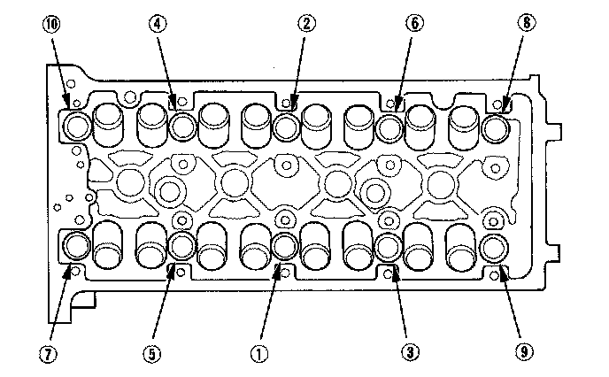
10. After torquing, tighten all cylinder head bolts in two steps (90° per step). If you are using a new cylinder head bolt, tighten the bolt an extra 90°.
NOTE: Remove the cylinder head bolt if you tightened it beyond the specified angle, and go back to step 6 of the procedure. Do not loosen it back to the specified angle.
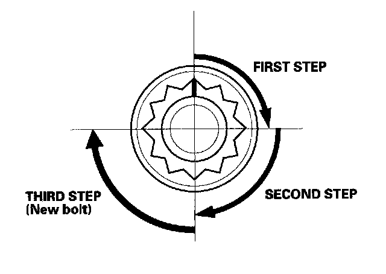
11. Install the rocker arm assembly.
12. Install the cam chain.
13. Connect the engine wire harness connectors, and install the wire harness clamps to the cylinder head.
^ Four fuel injector connectors
^ Engine coolant temperature (ECT) sensor 1 connector
^ Camshaft position (CMP) sensor A (Intake) connector
^ Camshaft position (CMP) sensor B (Exhaust) connector
^ Rocker arm oil control solenoid connector
^ Rocker arm oil pressure switch connector
^ EVAP canister purge valve connector
14. Install the bolt securing the connecting pipe.
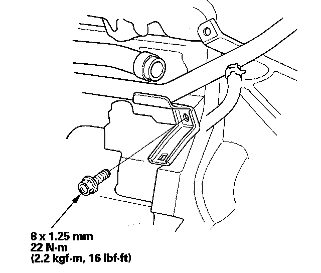
15. Install the upper radiator hose (A) and heater hoses (B).
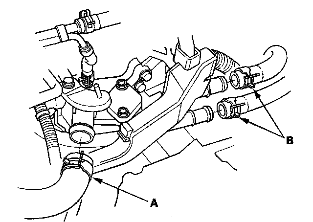
16. Install the harness holder bracket (A), then install the harness holder (B).
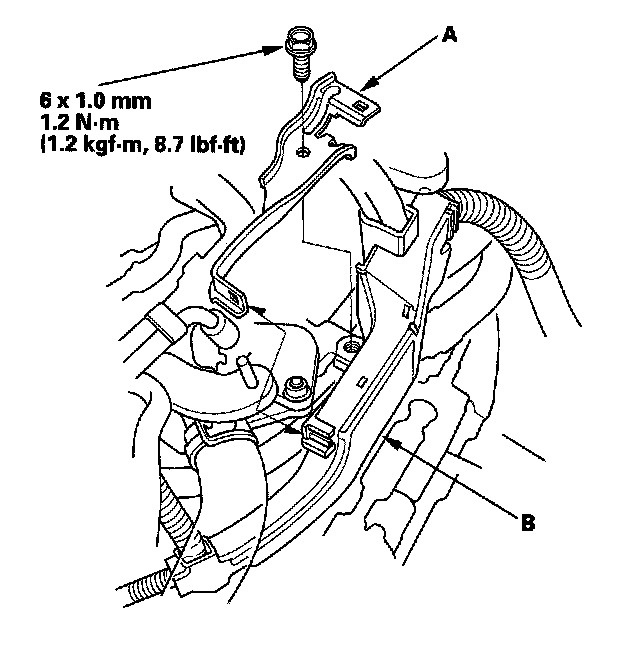
17. Connect the fuel feed hose, then install the quick-connect fitting cover (A).
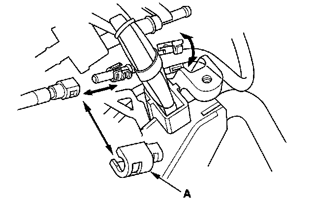
18. Install the evaporative emission (EVAP) canister hose (A) and brake booster vacuum hose (B).
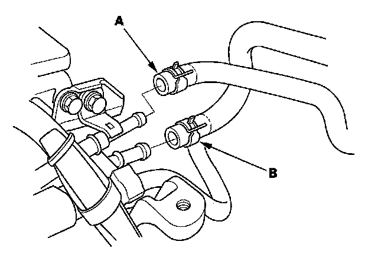
19. Install the exhaust manifold.
20. Install the intake manifold.
21. Install the drive belt.
22. Install the air cleaner assembly.
23. After installation, check that all tubes, hoses and connectors are installed correctly.
24. Inspect for fuel leaks. Turn the ignition switch ON (II) (do not operate the starter) so that the fuel pump runs for about 2 seconds and pressurizes the fuel line. Repeat this operation two or three times, then check for fuel leakage at any point in the fuel line.
25. Refill the radiator with engine coolant, and bleed the air from the cooling system with the heater valve open.
26. Do the crankshaft position (CKP) pattern clear/CKP pattern learn procedure.
27. Inspect the idle speed.
28. Inspect the ignition timing.